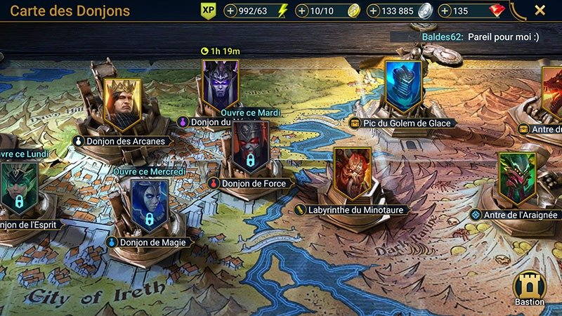

- Donjon des arcanes (récompenses potion fioles blanche pour tout les guerriers)
- Donjon de l'esprit (récompenses potion fioles verte pour guerriers de type esprit)
- Donjon de Magie (récompenses potion fioles de magie pour guerrier de type magie)
- Donjon du néant (récompenses potion fiole du néant pour guerriers de type néant).
- Donjon de force (récompense potion fiole de force pour guerriers de type force.
- Labyrinte du Minautore (pour gagner des parchemins de maîtrise.
- Pic du golem de glace si vainqueur récompenses d'équipement pour les guerriers.
- Ancre de l'arraignée (récompense de bagues, colliers, balises pour les guerrier si arraignée vaincu.
- Ancre du dragon si vaicu des équipements intéressants peuvent être gagnés.
- chateau du chevalier de feu si vaincu des équipements peuvent être gagnés.